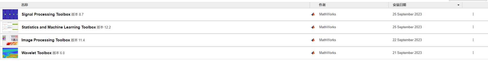

小鼠day11-继续debug
今天开始有课 趁着不上课的时间回来进行一下debug的工作
目前的进展是在读这个create_extra_behavioral_features.m这个代码的文件，目前看下来这个函数并不是完全没有被执行，前面的一些代码，包括生成一些数据文件，以及绘制一些图都有被操作到。很直观的是到了中间的位置 109和44这两个散点图和频率图都能看到被plot出来，那说明这个代码是有被执行的，但是为什么会有数据没被保存呢？我决定先读完这个代码，看看后面还有没有什么图没被执行操作 以及对应的ML_feature应该被存在哪里 是不是没存上 把这几个问题去落实一下。
忘记总结了 现在补一下：按照上面的思路去分析了一下，ML_feature是存在名为’myextratsnefeatures’这个文件里的，但是在这个文件里面却只有’framelist_true’这一个数据，就说明其他该写的数据没有写进去，于是分析了一下’creature_extra_features’文件中写save的地方，发现在这之前会有一个if语句的判定，在确保如果不需要overwrite后就会写进这个文件中 不知道是这里写错了还是什么 我把这一块的if语句全都注释掉以后 成功跑通

这里总结了一下，主要就是在添加了这几个附加包后，对代码做了一下修改后能够跑通。
All articles in this blog are licensed under CC BY-NC-SA 4.0 unless stating additionally.